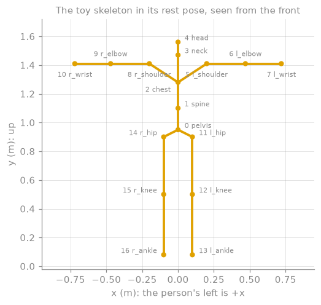
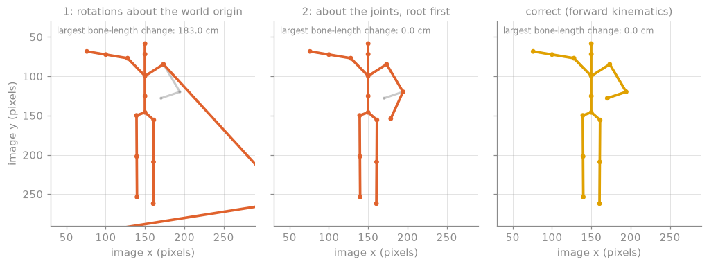
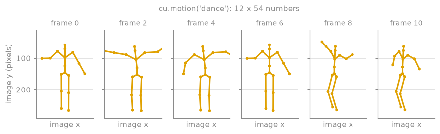
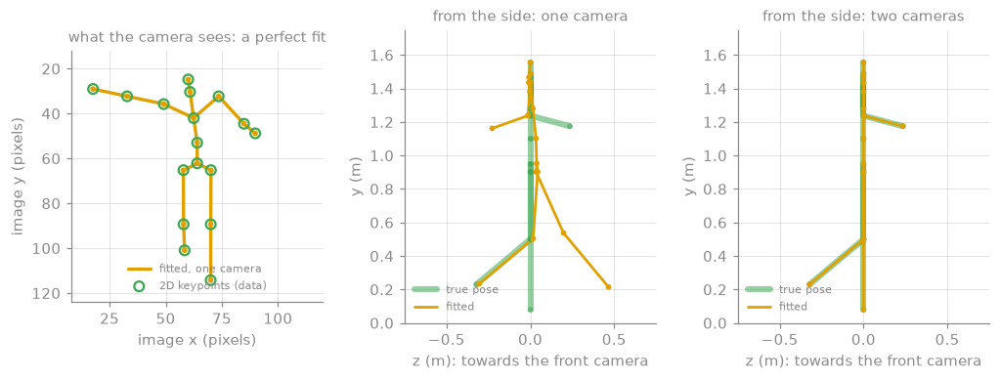
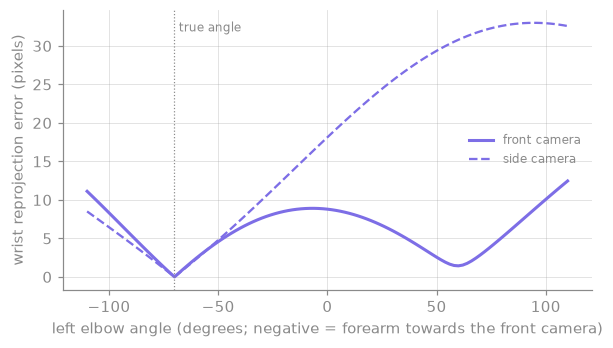

A skeleton and forward kinematics: how a pose moves a body#
What you will learn
How a body is described as a tree of joints, and what the numbers of a pose mean.
How an axis-angle vector becomes a rotation matrix (Rodrigues’ formula), including at zero rotation.
How rotations travel down the tree (forward kinematics), and how the body tears apart when they are composed the wrong way.
That forward kinematics is differentiable: a pose can be recovered from 2D keypoints by gradient descent, up to an ambiguity that one camera cannot resolve.
Prerequisites: Lesson 2c ended with Gaussians that could not move. This lesson builds the thing that will move them. You need rotation matrices and matrix products; the pinhole camera of Lesson 2b returns in the last section.
1. A body is a tree of joints#
A skeleton, for our purposes, is three lists.
cu.JOINTS: the names of the joints.cu.PARENTS: for every joint, the index of the joint it hangs from. The root (the pelvis) has parent \(-1\).cu.REST_JOINTS: where every joint is in the rest pose, a T-pose with the arms straight out.
Each joint has exactly one parent, so the joints form a tree, the kinematic tree. A bone is the segment from a joint to its parent.
def children(j):
return [c for c, p in enumerate(cu.PARENTS) if p == j]
def print_tree(j=0, depth=0):
x, y, z = cu.REST_JOINTS[j].tolist()
print(f"{' ' * depth}{j:2d} {cu.JOINTS[j]:<11s} rest position ({x:+.2f}, {y:.2f}, {z:+.2f})")
for c in children(j):
print_tree(c, depth + 1)
print_tree()
0 pelvis rest position (+0.00, 0.95, +0.00)
1 spine rest position (+0.00, 1.10, +0.00)
2 chest rest position (+0.00, 1.28, +0.00)
3 neck rest position (+0.00, 1.47, +0.00)
4 head rest position (+0.00, 1.56, +0.00)
5 l_shoulder rest position (+0.20, 1.41, +0.00)
6 l_elbow rest position (+0.47, 1.41, +0.00)
7 l_wrist rest position (+0.72, 1.41, +0.00)
8 r_shoulder rest position (-0.20, 1.41, +0.00)
9 r_elbow rest position (-0.47, 1.41, +0.00)
10 r_wrist rest position (-0.72, 1.41, +0.00)
11 l_hip rest position (+0.10, 0.90, +0.00)
12 l_knee rest position (+0.10, 0.50, +0.00)
13 l_ankle rest position (+0.10, 0.08, +0.00)
14 r_hip rest position (-0.10, 0.90, +0.00)
15 r_knee rest position (-0.10, 0.50, +0.00)
16 r_ankle rest position (-0.10, 0.08, +0.00)

The view is from the front, so the person’s left arm (l_, towards \(+x\)) is on the right of the picture.
Two properties of the lists will be used below without further comment: a parent always has a smaller index
than its children, and the root comes first.
A pose \(\theta\) is one rotation per joint. The rotation of joint \(j\) says how the bone leaving \(j\) is turned relative to the parent’s bone: bend the elbow by 90° and the pose stores “elbow: 90°”, no matter what the shoulder is doing. The root’s rotation turns the whole body, and a translation \(\tau \in \mathbb{R}^3\) places it in the world.
2. One rotation is three numbers: axis-angle and Rodrigues’ formula#
Each joint rotation is stored as an axis-angle vector \(a \in \mathbb{R}^3\). Its direction \(k = a / \lVert a \rVert\) is the axis to turn about, and its length \(\phi = \lVert a \rVert\) is the angle in radians. Zero rotation is the zero vector, which is what makes the rest pose “all zeros”.
To rotate a point we need a matrix. Write the cross product with \(k\) as a matrix \(K\), so that \(K x = k \times x\):
This is Rodrigues’ formula. Its three terms have a geometric reading. Split \(x\) into the part along the axis and the part perpendicular to it. The part along the axis does not move. The perpendicular part turns in its plane: \(Kx\) is that part turned by a quarter turn, and \(K^2 x\) is minus that part.
def rodrigues_naive(a):
"""Axis-angle (..., 3) -> rotation matrices (..., 3, 3). Written exactly as the formula."""
phi = a.norm(dim=-1, keepdim=True)
kx, ky, kz = (a / phi).unbind(-1)
zero = torch.zeros_like(kx)
K = torch.stack([zero, -kz, ky, kz, zero, -kx, -ky, kx, zero], -1).reshape(a.shape[:-1] + (3, 3))
return torch.eye(3, dtype=a.dtype) + torch.sin(phi)[..., None] * K + (1 - torch.cos(phi))[..., None] * (K @ K)
quarter_z = torch.tensor([0.0, 0.0, math.pi / 2]) # a quarter turn about the z axis
print("x axis after a quarter turn about z:", [round(v, 3) for v in (rodrigues_naive(quarter_z) @ torch.tensor([1.0, 0.0, 0.0])).tolist()])
a = cu.randn(6, 3, generator=cu.generator(0), dtype=torch.float64)
R = rodrigues_naive(a)
print("R R^T = I up to", f"{(R @ R.transpose(-1, -2) - torch.eye(3, dtype=torch.float64)).abs().max().item():.1e}",
"| same as cu.axis_angle_to_matrix up to", f"{(R - cu.axis_angle_to_matrix(a)).abs().max().item():.1e}")
assert torch.allclose(R, cu.axis_angle_to_matrix(a), atol=1e-9)
x axis after a quarter turn about z: [0.0, 1.0, 0.0]
R R^T = I up to 3.3e-16 | same as cu.axis_angle_to_matrix up to 2.0e-13
The failure. The formula divides by the angle. The most common pose value of all is zero rotation, and there it divides zero by zero.
zero = torch.zeros(3, requires_grad=True)
print("naive formula at zero rotation:"); print(rodrigues_naive(zero).detach())
naive formula at zero rotation:
tensor([[nan, nan, nan],
[nan, nan, nan],
[nan, nan, nan]], device='cuda:0')
A NaN in one joint spreads to everything that hangs below it, and then to the loss. The repair must also keep the gradient finite at zero, because an optimiser that starts from the rest pose differentiates right there. The library’s version adds a tiny constant under the square root, \(\phi = \sqrt{\lVert a\rVert^2 + \epsilon}\), so that \(a / \phi\) is zero at zero instead of undefined:
def rodrigues(a, eps=1e-12):
"""Rodrigues' formula, safe at zero rotation (the same as cu.axis_angle_to_matrix)."""
phi = torch.sqrt((a * a).sum(-1, keepdim=True) + eps)
kx, ky, kz = (a / phi).unbind(-1)
zero = torch.zeros_like(kx)
K = torch.stack([zero, -kz, ky, kz, zero, -kx, -ky, kx, zero], -1).reshape(a.shape[:-1] + (3, 3))
return torch.eye(3, dtype=a.dtype) + torch.sin(phi)[..., None] * K + (1 - torch.cos(phi))[..., None] * (K @ K)
zero = torch.zeros(3, dtype=torch.float64, requires_grad=True)
x = torch.tensor([1.0, 0.0, 0.0], dtype=torch.float64)
moved = rodrigues(zero) @ x
jac = torch.autograd.functional.jacobian(lambda v: rodrigues(v) @ x, zero)
print("R(0) x =", moved.tolist())
print("d(R x)/da at zero ="); print(jac)
assert torch.allclose(moved, x) and torch.isfinite(jac).all()
assert torch.allclose(rodrigues(a), cu.axis_angle_to_matrix(a), atol=1e-12)
R(0) x = [1.0, 0.0, 0.0]
d(R x)/da at zero =
tensor([[ 0.0000, 0.0000, 0.0000],
[ 0.0000, 0.0000, 1.0000],
[ 0.0000, -1.0000, 0.0000]], device='cuda:0', dtype=torch.float64)
The gradient at zero is finite, and it is the right one. For a small rotation, \(R x \approx x + a \times x\): a small turn about z moves the x axis towards y, a small turn about y moves it towards \(-z\), and a turn about x itself does nothing. Those are the three columns printed above.
small = torch.tensor([2e-4, -1e-4, 3e-4], dtype=torch.float64)
err = (rodrigues(small) @ x - (x + torch.linalg.cross(small, x))).abs().max().item()
print(f"small-angle check: R x differs from x + a × x by {err:.1e} (the angle squared is {small.norm().item() ** 2:.1e})")
assert err < 1e-6
small-angle check: R x differs from x + a × x by 5.0e-08 (the angle squared is 1.4e-07)
3. What goes wrong: rotating about the wrong point, or in the wrong order#
A pose is a list of rotations. How do they move the joints? Here is a pose that uses two joints of the left arm: the shoulder lowers the arm by 50°, and the elbow bends the forearm 90° forwards.
J = cu.joint_index
pose = torch.zeros(cu.N_JOINTS, 3)
pose[J("l_shoulder")] = torch.tensor([0.0, 0.0, math.radians(-50.0)]) # about z: lower the arm
pose[J("l_elbow")] = torch.tensor([0.0, math.radians(-90.0), 0.0]) # about y: bend the forearm forwards
def descendants(j):
out = []
for c in children(j):
out += [c] + descendants(c)
return out
def pose_by_rotating(pose, pivot, order):
"""Move the rest joints by applying each joint's rotation to everything below that joint.
pivot: 'origin' or 'joint'. order: the sequence in which the joints are processed."""
x = cu.REST_JOINTS.clone()
R = rodrigues(pose)
for j in order:
below = descendants(j)
if below:
centre = x[j] if pivot == "joint" else torch.zeros(3)
x[below] = (x[below] - centre) @ R[j].T + centre
return x
root_first = list(range(cu.N_JOINTS))
attempt_origin = pose_by_rotating(pose, "origin", root_first)
attempt_order = pose_by_rotating(pose, "joint", root_first)
Attempt 1: rotate about the world origin. A rotation matrix turns points about the origin of the coordinate system. The origin of the world is on the floor between the feet. An elbow should turn about the elbow.
Attempt 2: rotate about the joint, root first. Now each rotation is centred on its joint. The shoulder goes first and lowers the arm. Then the elbow turns the forearm about the world’s y axis. But the elbow’s axis is part of the arm, and it went down with the arm. The pose says “bend forwards, relative to the upper arm”, and the upper arm no longer points where it did.
bone-length error: attempt 1 183.0 cm, attempt 2 6.0e-06 cm
wrist position error: attempt 1 159 cm, attempt 2 21 cm

The grey skeleton in each panel is the correct answer. Attempt 1 tears the arm off: the upper arm has changed its length, because one of its ends turned about a point on the floor and the other end stayed. Attempt 2 keeps every bone length, so it looks like a body, but the forearm points down instead of forwards. The second error is the more dangerous one in practice, because nothing looks broken.
There is a version of this procedure that works: process the joints leaf first. Turn the hand about the wrist, then the forearm (with the hand) about the elbow, then the arm about the shoulder. Each rotation is applied while its bone still lies along its rest direction, so the pose’s axes mean what they say.
leaf_first = pose_by_rotating(pose, "joint", root_first[::-1])
print("leaf first vs the library's forward kinematics:", f"{(leaf_first - correct).abs().max().item():.1e} m")
assert torch.allclose(leaf_first, correct, atol=1e-6)
leaf first vs the library's forward kinematics: 0.0e+00 m
4. Forward kinematics: composing transforms down the tree#
Moving points around in a loop is slow and awkward to reuse. The standard formulation computes one transform per joint that can then be applied to anything attached to that joint: a joint position now, a skin surface in the next lesson.
Give every joint \(j\) its own coordinate frame, with the origin at the joint and, in the rest pose, the axes of the world. The local transform places joint \(j\)’s frame inside its parent’s frame: rotate by \(R_j\), then shift by the rest offset \(o_j = r_j - r_{p(j)}\) from the parent joint to this joint (\(r\) are the rest positions, \(p(j)\) is the parent). As a 4 x 4 matrix acting on \((x, y, z, 1)\):
\(G_j\) is the world transform of joint \(j\): it maps a point given in joint \(j\)’s frame to the world. Multiplying out the recursion for the wrist gives \(G_\text{wrist} = L_\text{pelvis} L_\text{spine} L_\text{chest} L_\text{shoulder} L_\text{elbow} L_\text{wrist}\). Read from the right, this is the leaf-first procedure of the last cell: the innermost transform acts first. The last column of \(G_j\) is the image of the frame’s origin, which is the posed position of the joint itself.
def forward_kinematics(pose, trans):
"""pose (J, 3) axis-angle per joint, trans (3,). Returns world transforms G (J, 4, 4) and joints (J, 3)."""
rest = cu.REST_JOINTS.to(pose.dtype)
R = rodrigues(pose)
bottom = torch.tensor([[0.0, 0.0, 0.0, 1.0]], dtype=pose.dtype)
G = []
for j, p in enumerate(cu.PARENTS): # parents come before their children
offset = rest[j] + trans if p < 0 else rest[j] - rest[p]
L = torch.cat([torch.cat([R[j], offset[:, None]], 1), bottom], 0)
G.append(L if p < 0 else G[p] @ L)
G = torch.stack(G)
return G, G[:, :3, 3]
dance_poses, dance_trans = cu.motion("dance", 12)
G, joints = forward_kinematics(dance_poses[5], dance_trans[5])
G_lib, joints_lib = cu.forward_kinematics(dance_poses[5], dance_trans[5])
print("largest difference to cu.forward_kinematics: transforms", f"{(G - G_lib).abs().max().item():.1e},",
"joints", f"{(joints - joints_lib).abs().max().item():.1e}")
assert torch.allclose(G, G_lib, atol=1e-6)
largest difference to cu.forward_kinematics: transforms 6.0e-08, joints 6.0e-08
Bone lengths are preserved. Every \(L_j\) is a rotation followed by a shift, a rigid motion. A product of rigid motions is rigid. So whatever the pose, the distance between a joint and its parent is the rest distance. Random poses confirm it, including wild ones that no body could take:
g = cu.generator(1)
rest_len = torch.stack([(cu.REST_JOINTS[c] - cu.REST_JOINTS[p]).norm() for c, p in enumerate(cu.PARENTS) if p >= 0])
worst = 0.0
for _ in range(200):
_, x = forward_kinematics(2.0 * cu.randn(cu.N_JOINTS, 3, generator=g), cu.randn(3, generator=g))
lengths = torch.stack([(x[c] - x[p]).norm() for c, p in enumerate(cu.PARENTS) if p >= 0])
worst = max(worst, (lengths - rest_len).abs().max().item())
print(f"200 random poses: largest change of any bone length {worst:.1e} m")
assert worst < 1e-5
200 random poses: largest change of any bone length 2.4e-07 m
Counting. A pose of the toy body is \(17 \times 3\) numbers, plus 3 for the translation: 54 numbers per frame. Everything the body does in this course is a sequence of such vectors.

The poses are relative, and that is what makes them a good parameterisation. Change one number at the shoulder and the elbow, wrist and hand follow without being told. The price is that an error near the root is carried all the way down: a few degrees at the spine move the hands by centimetres.
def wrist_shift(joint, degrees=3.0):
p = torch.zeros(cu.N_JOINTS, 3); p[J(joint), 2] = math.radians(degrees)
return 100 * (forward_kinematics(p, torch.zeros(3))[1] - cu.REST_JOINTS)[J("l_wrist")].norm().item()
print("a 3° error moves the left wrist by:", {j: f"{wrist_shift(j):.1f} cm" for j in ("spine", "l_shoulder", "l_elbow")})
assert wrist_shift("spine") > wrist_shift("l_shoulder") > wrist_shift("l_elbow")
a 3° error moves the left wrist by: {'spine': '4.1 cm', 'l_shoulder': '2.7 cm', 'l_elbow': '1.3 cm'}
5. Running the tree backwards: a pose from 2D keypoints#
Forward kinematics is built from sines, cosines and matrix products, so it is differentiable, and so is the camera projection. Chain them and the 2D position of every joint in an image becomes a differentiable function of the pose. That is enough to do a first, small version of tracking: given where the joints appear in a picture, find the pose.
The data: one target pose, and its 17 joints projected into a front camera. A real system would get these 2D points from a keypoint detector.
target_pose, target_trans = cu.a_pose()
target_pose, target_trans = target_pose[0].clone(), target_trans[0].clone()
target_pose[J("l_elbow")] = torch.tensor([0.0, math.radians(-70.0), 0.0]) # left forearm towards the camera
target_pose[J("r_shoulder")] = torch.tensor([0.0, 0.0, math.radians(-20.0)]) # right arm raised
target_pose[J("r_knee")] = torch.tensor([math.radians(50.0), 0.0, 0.0]) # right knee bent
target_pose[J("spine")] = torch.tensor([0.0, 0.0, math.radians(8.0)])
_, target_joints = cu.forward_kinematics(target_pose, target_trans)
front = cu.orbit_camera(azimuth_deg=0, size=128)
side = cu.orbit_camera(azimuth_deg=90, size=128)
def fit_pose(cams, iters=400, lr=0.05):
"""Gradient descent on the 2D keypoint error, starting from the rest pose."""
keypoints = [cam.project(target_joints)[0] for cam in cams]
pose = torch.zeros(cu.N_JOINTS, 3, requires_grad=True)
trans = torch.zeros(3, requires_grad=True)
opt = torch.optim.Adam([pose, trans], lr=lr)
for it in range(iters):
_, joints = forward_kinematics(pose, trans)
loss = sum(((cam.project(joints)[0] - kp) ** 2).sum(-1).mean() for cam, kp in zip(cams, keypoints))
opt.zero_grad(); loss.backward(); opt.step()
return forward_kinematics(pose.detach(), trans.detach())[1]
def errors(joints):
e2d = (front.project(joints)[0] - front.project(target_joints)[0]).norm(dim=-1).mean().item()
e3d = 100 * (joints - target_joints).norm(dim=-1)
return e2d, e3d.mean().item(), e3d.max().item(), cu.JOINTS[int(e3d.argmax())]
one_view = fit_pose([front])
e2d, e3d, worst, where = errors(one_view)
print(f"one camera: 2D error in that camera {e2d:.2f} px | 3D error mean {e3d:.1f} cm, worst {worst:.0f} cm at {where}")
one camera: 2D error in that camera 0.04 px | 3D error mean 8.2 cm, worst 49 cm at l_ankle
Read the two numbers together. In the image, the fitted skeleton lies on the keypoints to a fraction of a pixel. In space, some joints are tens of centimetres from where they should be.
two_views = fit_pose([front, side])
e2d_2, e3d_2, worst_2, _ = errors(two_views)
print(f"two cameras: 2D error in the front camera {e2d_2:.2f} px | 3D error mean {e3d_2:.2f} cm, worst {worst_2:.2f} cm")
assert e2d < 1.0 and worst > 10.0 and worst_2 < 1.0
two cameras: 2D error in the front camera 0.00 px | 3D error mean 0.00 cm, worst 0.00 cm

Seen from the side, the one-camera fit is a different pose. The left forearm is behind the body; the true forearm points towards the camera. A straight leg has swung forwards. Yet the picture from the front is the same, because a pinhole camera measures direction, not distance. Each keypoint says only that its joint lies somewhere on one ray through the camera centre. Given the parent joint, the child must also lie on a sphere around the parent whose radius is the bone length. A ray meets a sphere in two points: one nearer the camera and one farther. So every bone has two candidate directions that draw the same picture, tilted towards the camera or away from it. This is the depth ambiguity of a single view.
The same thing as a loss landscape, for one joint: keep everything at the true pose, sweep the left elbow angle, and plot the wrist’s reprojection error in each camera.
angles = torch.arange(-110, 111, 2.0)
sweep = {"front camera": [], "side camera": []}
for a in angles:
p = target_pose.clone(); p[J("l_elbow")] = torch.tensor([0.0, math.radians(float(a)), 0.0])
x = forward_kinematics(p, target_trans)[1][J("l_wrist")]
for name, cam in (("front camera", front), ("side camera", side)):
sweep[name].append((cam.project(x)[0] - cam.project(target_joints[J("l_wrist")])[0]).norm().item())
fig, ax = plt.subplots(figsize=(6.2, 3.3))
ax.plot(cu.to_np(angles), sweep["front camera"], color=cu.COLORS["camera"], label="front camera")
ax.plot(cu.to_np(angles), sweep["side camera"], color=cu.COLORS["camera"], ls="--", lw=1.5, label="side camera")
ax.axvline(-70, color=cu.plotting.INK, lw=0.8, ls=":"); ax.text(-68, ax.get_ylim()[1] * 0.92, "true angle", fontsize=8)
ax.set_xlabel("left elbow angle (degrees; negative = forearm towards the front camera)")
ax.set_ylabel("wrist reprojection error (pixels)"); ax.legend(fontsize=8);
front_err = torch.tensor(sweep["front camera"]); positive = angles > 20
twin = angles[positive][front_err[positive].argmin()].item()
print(f"front camera: a second minimum at {twin:+.0f}° with {front_err[positive].min().item():.2f} px of error "
f"(the true minimum is at -70° with 0 px)")
print(f"side camera at that angle: {sweep['side camera'][int((angles == twin).nonzero())]:.0f} px")
assert front_err[positive].min() < 3.0 and sweep["side camera"][int((angles == twin).nonzero())] > 10
front camera: a second minimum at +60° with 1.44 px of error (the true minimum is at -70° with 0 px)
side camera at that angle: 31 px

The front camera’s curve has two valleys. The wrong one is not quite as deep as the right one, but the difference is about a pixel in a 128-pixel image, and the full fit hid even that by adjusting the other joints a little. A real keypoint detector is not more accurate than this. Which valley gradient descent ends in depends on where it starts and on the first few steps; here it rolled into the wrong one for the forearm and for a leg. The side camera’s curve has a single valley, and with both cameras the fit is exact.
This toy result is honest about the real problem. A single camera constrains a pose well in the image plane and poorly in depth. Real monocular trackers resolve it with what a few keypoints lack: a learned prior over plausible human poses, the silhouette, the continuity of motion over time, or a second camera.
A clip for this lesson and the next
The animation in Lesson 3b shows the kinematic chain of this lesson in motion, and then puts a surface on it.
In the real pipeline#
The real system uses the skeleton of SMPL [Loper et al., 2015], with joints that are not hand-placed but computed from the body shape. Forward kinematics is the same recursion.
This lesson |
Real code |
|---|---|
17 hand-placed joints, 54 numbers per pose |
SMPL: a root plus 23 joints, with joint positions regressed from the shaped mesh [Loper et al., 2015]. The hi-fi track adds finger joints (SMPL+H / MANO) and a jaw (FLAME): README, Method |
|
Poses are seeded by an off-the-shelf tracker (GVHMR) and then corrected per frame from silhouettes and keypoints, with gradients through the body model and the renderer: |
The depth ambiguity of section 5 |
The capture guide names it as a main cause of lost detail (“with one camera, depth and finger positions are guesses”) and plans three cameras for the next session: docs/CAPTURE_GUIDE.md |
The pose correction in the repository never uses colour, only masks and keypoints (README, Method). Part 5 shows on the toy why pose errors matter so much for the texture.
Summary#
A skeleton is a tree: joint names, a parent for each joint, and rest positions. A pose is one axis-angle rotation per joint, relative to the parent, plus a root translation.
Rodrigues’ formula, \(R = I + \sin\phi\,K + (1-\cos\phi)\,K^2\), turns an axis-angle vector into a matrix. It must be written so that the value and the gradient are finite at zero rotation.
Forward kinematics composes local transforms from the root down: \(G_j = G_{p(j)} L_j\). A rotation acts about its own joint, in the frame its parent has carried it to.
Rotating about the world origin tears bones apart. Composing in the wrong order keeps the bones and gives the wrong pose, which is harder to notice.
Bone lengths are the same in every pose, because every step is a rigid motion.
Forward kinematics is differentiable, so a pose can be fitted to 2D keypoints by gradient descent. One camera leaves the depth of each limb ambiguous.
Exercises#
Rotations do not commute. Compute
rodrigues(a) @ rodrigues(b)androdrigues(b) @ rodrigues(a)for quarter turns about x and y. Then find a pair of joints and axes on the toy body for which the order of section 3 does not matter, and explain why.The root joint’s rotation turns the whole body about the pelvis. Use
forward_kinematicsto make the body turn about its left ankle instead, without changing the function.In section 5, start the one-camera fit from a pose whose left elbow is already bent 20° towards the camera. Does it find the true pose? What does that tell you about the role of initialisation in tracking?
Add a third term to the loss of
fit_pose: a penalty \(\lambda \lVert \theta \rVert^2\) on the pose. Does it resolve the depth ambiguity? Why not?
Solution 1
ax_, ay_ = torch.tensor([math.pi / 2, 0, 0]), torch.tensor([0, math.pi / 2, 0])
print(rodrigues(ax_) @ rodrigues(ay_)); print(rodrigues(ay_) @ rodrigues(ax_)) # different
The order does not matter when the two rotations share an axis: for example the hip and the knee both turning about x, as in a squat. Rotations about the same axis add their angles in either order. It also does not matter for joints on different branches (the left and the right elbow), because neither is below the other.
Solution 2
Rotating by \(R\) about a point \(c\) is \(x \mapsto R(x - c) + c\). The root rotation turns about the pelvis \(r_0\), so add the difference to the translation: \(\tau = (I - R)(c - r_0)\).
turn = torch.zeros(cu.N_JOINTS, 3); turn[0, 1] = math.radians(60)
c = cu.REST_JOINTS[J("l_ankle")]
tau = (torch.eye(3) - rodrigues(turn[0])) @ (c - cu.REST_JOINTS[0])
print(forward_kinematics(turn, tau)[1][J("l_ankle")], c) # the ankle did not move
Lesson 7a uses this idea to keep a planted foot still.
Solution 3
Yes: from a start in the correct valley, gradient descent stays in it and reaches the true pose. Tracking is therefore rarely done from scratch for every frame. The previous frame’s pose, or a learned tracker’s estimate, puts the optimiser in the right valley; the optimisation only refines.
Solution 4
No. The two valleys are mirror images with the same elbow angle up to sign, so \(\lVert\theta\rVert^2\) is the same in both. A prior helps only if it tells the two candidates apart: for the elbow, a joint-limit prior does (a human elbow bends one way only), and that is one of the things a learned pose prior encodes.
References#
SMPL, the body model whose skeleton and pose parameterisation this lesson imitates: [Loper et al., 2015].
Camera geometry and the single-view ambiguity: [Hartley and Zisserman, 2004].
The monocular tracker that seeds the real pipeline’s poses: [Shen et al., 2024].